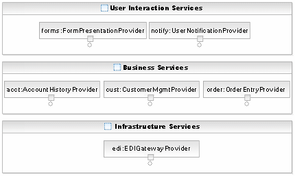
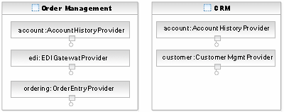
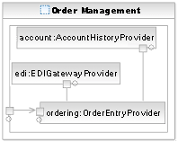
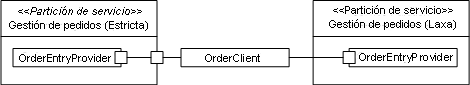

| Concepto: Particionamiento de soluciones |
 |
|
| Elementos relacionados |
|---|
IntroducciónSe ha escrito mucho sobre la descomposición de diseños de software en componentes o subsistemas. También se ha escrito mucho sobre la necesidad de entender la topología de despliegue que necesita una aplicación al principio de su ciclo de vida para que se puedan tomar las decisiones arquitectónicas correctas. No obstante, hay muy pocos mecanismos identificados o utilizados hoy en día para ayudar en el particionamiento lógico de un sistema durante el análisis arquitectónico, de modo que las decisiones relativas a la topología lógica de una solución y las restricciones impuestas por requisitos no funcionales se pueden solucionar fácilmente en el nivel de modelo antes de la generación de productos de trabajo de diseño e implementación detallados. La siguiente página describe un conjunto de elementos de modelo simples que permiten este razonamiento. Aunque se desarrollaron teniendo en mentesoluciones orientadas a servicios, estas técnicas son aplicables a cualquier modelado de arquitectura de software. Particiones y capasLas siguientes definiciones se toman del glosario de Rational Unified Process (RUP) y contrastan las nociones de capas y particiones. Curiosamente el término nivel, aunque común en la descripción de arquitectura lógica de una solución, no aparece en el glosario de RUP.
Por lo tanto, una partición contiene un conjunto de elementos que representan algún componente de la arquitectura pero, ¿cómo corta el arquitecto de software un modelo? La respuesta es aparentemente fácil: las particiones y capas son construcciones organizativas; en un nivel arquitectónico sólo representan la organización lógica. Por lo tanto, ¿qué aspectos de la organización de una solución desea representar? Por ejemplo, si la vista de modelo que desarrolla está relacionada con la seguridad, entonces puede que desee representar Zonas de confianza [JOHNSTON]. Para obtener más información, consulte los conceptos Capas yPatrones de distribución. ¿Qué puede representar una partición?Tal como comentamos anteriormente, se puede utilizar una partición para representar cualquier problema particular de organización en que el arquitecto desee centrarse. A continuación se muestran vistas comunes que se han construido en un modelo. Observe que un aspecto clave de las particiones es que no implican propiedad/contención y, por tanto, un servicio puede aparecer en diversas particiones simultáneamente. Organización de solución lógica; en este caso las particiones representan la agrupación en clúster lógica de elementos de una determinada solución. Por ejemplo, en una aplicación empresarial podríamos utilizar particiones para representar la separación en servicios de interacción con el usuario, servicios empresariales y servicios de infraestructura. Dicha vista se corresponde más con el uso de capas en RUP para describir niveles de una aplicación. Sin embargo, como los servicios no se pueden poner fácilmente en capas de la misma forma que una solución basada en objeto o un componente, utilizamos particiones. Para obtener más información sobre estas clasificaciones de servicio, consulte el apartado Concepto: cartera de servicios.  Distribución física de alto nivel; en este caso las particiones se pueden utilizar para indicar servicios locales frente a remotos, al menos cuando la distancia física impone restricciones en la arquitectura. Por ejemplo, teniendo en cuenta que el cliente, la cuenta y los servicios de pedido están alojados en nuestro centro de datos principal y que la pasarela de Intercambio de datos electrónicos (EDI) está alojada en un centro de datos secundario es importante cuando también descubrimos que la conexión de banda ancha entre estos centros está gestionada y debemos controlar de forma cuidadosa la comunicación entre estas particiones. Límites de propiedad/aplicación empresarial; en este caso, se utilizan particiones para representar la propiedad de servicios de un área empresarial o de un área de aplicación. Por ejemplo, podríamos señalar que determinados servicios son "propiedad" de Recursos humanos, algunos de Ventas y otros de Marketing. Ahora, aunque esto no sea un problema arquitectónico, la mayoría de los proyectos deben tratar con aspectos que no implican tecnología o arquitectura sino aspectos sociales y políticos de la organización. Las particiones, en este sentido, nos permiten ver cómo la interacción entre servicios cruza dichos límites y puede tener impacto en el proceso de desarrollo requiriendo el soporte del grupo de interés para el cambio en toda la organización. En este caso el Artefacto: Sistemas empresariales identificado durante el análisis empresarial formaría las categorías de este modelo. Límites del proceso empresarial; en este caso representamos áreas de proceso de extremo a extremo con particiones, agrupando en realidad servicios mediante los procesos a los que da soporte. El siguiente diagrama contrasta la vista de proceso (sombreada) con la vista de sistemas empresariales representados como barras verticales. Es importante en muchos casos relacionar estas dos vistas de servicios ya desplegadas y los servicios planeados por un proyecto.  Para obtener más información sobre la conexión entre el modelado de proceso y la identificación de servicios, consulte el apartado Actividad: análisis de activos existentes. Particiones en el modelo de servicioEn el Modelo de servicio un elemento de modelo particular, la partición de servicio se utiliza para modelar particiones lógicas. La representación de UML 2.0 para particiones se basa en el uso del elemento de modelo Clase (aunque algunos usuarios prefieren utilizar subtipos de clase como Componente o Nodo allí donde encajen mejor con sus necesidades) y utiliza estructura compuesta para definir los servicios de una partición y la comunicación entre ellos. El elemento partición de servicio aparece en las siguientes imágenes y puede contener no sólo instancias de Proveedores de servicio sino también instancias de otras particiones y, por tanto, se puede componer con posterioridad cuando sea adecuado. Una partición de servicio puede también especificar una o más pasarelas de servicio que se nombran y escriben como puertos de UML 2.0. Estos puertos son escritos mediante Especificaciones de servicio de la misma forma que un servicio y, por tanto, puede concebirse como servicios virtuales que especifican la interfaz con una partición. Así, por ejemplo, sería adecuado tener en cuenta que se acceda al área de proceso de gestión de pedidos a través de la misma interfaz que al proveedor de servicios de entrada de pedidos del anterior diagrama. Esto se llama promover la interfaz desde el servicio a la partición. El siguiente diagrama lo describe y muestra cómo el proveedor de servicios de entrada de pedidos se comunica con los otros servicios de la partición.  Una posibilidad de la pasarela de servicio es mediar enlaces de comunicación entre clientes de fuera de la partición y servicios de dentro. Esto permite que los servicios sólo traten con determinados enlaces de protocolo de una partición, por ejemplo para utilizar un protocolo de mayor rendimiento o más seguro dentro de los límites y exponer determinadas funciones a clientes a través de un protocolo diferente. Para obtener más información, consulte la directriz Mediación de servicio. Observe también que como las particiones se basan en el uso de estructuras compuestas de UML 2.0 y no hay relación de "contención" entre la partición y los servicios, es posible, tal como hemos mostrado anteriormente, representar los mismos servicios en diversas particiones o vistas. Si esta flexibilidad está relacionada con la posibilidad de pasarelas de servicio, el arquitecto y el diseñador del software pueden agrupar en clúster los servicios en agrupaciones lógicas y permitir que las pasarelas de servicio sólo expongan interfaces relevantes a los clientes. Especificación de particiones estrictasUna partición estricta es una partición en la que los clientes/servicios externos a la partición tienen acceso a todos los servicios de la misma a través de pasarelas de servicio. Esto implica que la partición de servicio tiene su propio conjunto de interfaces y, como tal, puede verse como proveedor de servicio lógico del nivel más alto. Esto es especialmente útil para particiones que representan límites de aplicaciones empresariales o límites de procesos empresariales. También permite que el proceso representado identifique las interfaces que expone al resto de la empresa y qué servicios que den soporte al área de proceso están disponibles de forma pública. La partición de gestión de pedidos anterior es una partición estricta pero el concepto de lo "estricto" sólo se puede estudiar evaluando una partición y no una propiedad del propio elemento de modelo. En el siguiente ejemplo la partición de la izquierda se puede considerar estricta porque el cliente (fuera de la partición) sólo puede comunicarse con el proveedor de entrada de pedidos (dentro de la partición) a través de una pasarela. Por otro lado, la partición mostrada a la derecha del diagrama no se puede considerar estricta ya que el cliente se comunica directamente con el proveedor de entrada de pedidos dentro de la partición.  Es importante tener en cuenta que el modelado de particiones estrictas, incluso el uso de pasarelas, es opcional y debería considerarse simplemente como una herramienta que permite el modelado de comunicaciones explícitas entre particiones (representen lo que representen), y para muchos fines no se puede garantizar la sobrecarga adicional. Referencias[JOHNSTON] Simon Johnston, Modeling Security Concerns in Service-Oriented Architecture. IBM developerWorks 2004. |
© Copyright IBM Corp. 1987, 2006. Reservados todos los derechos. |